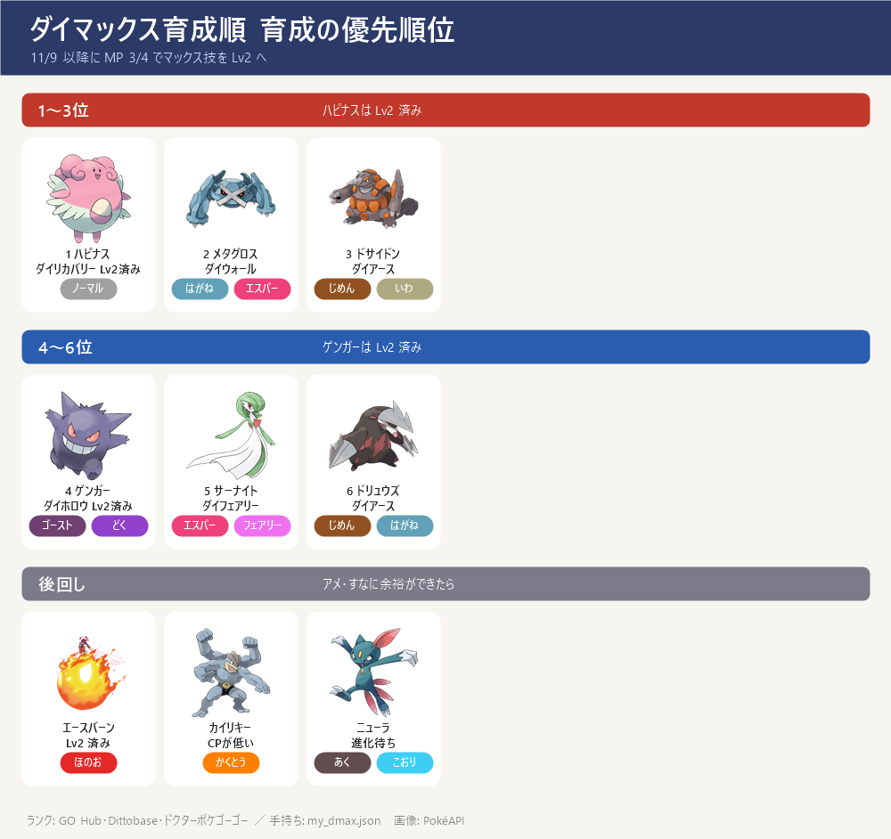
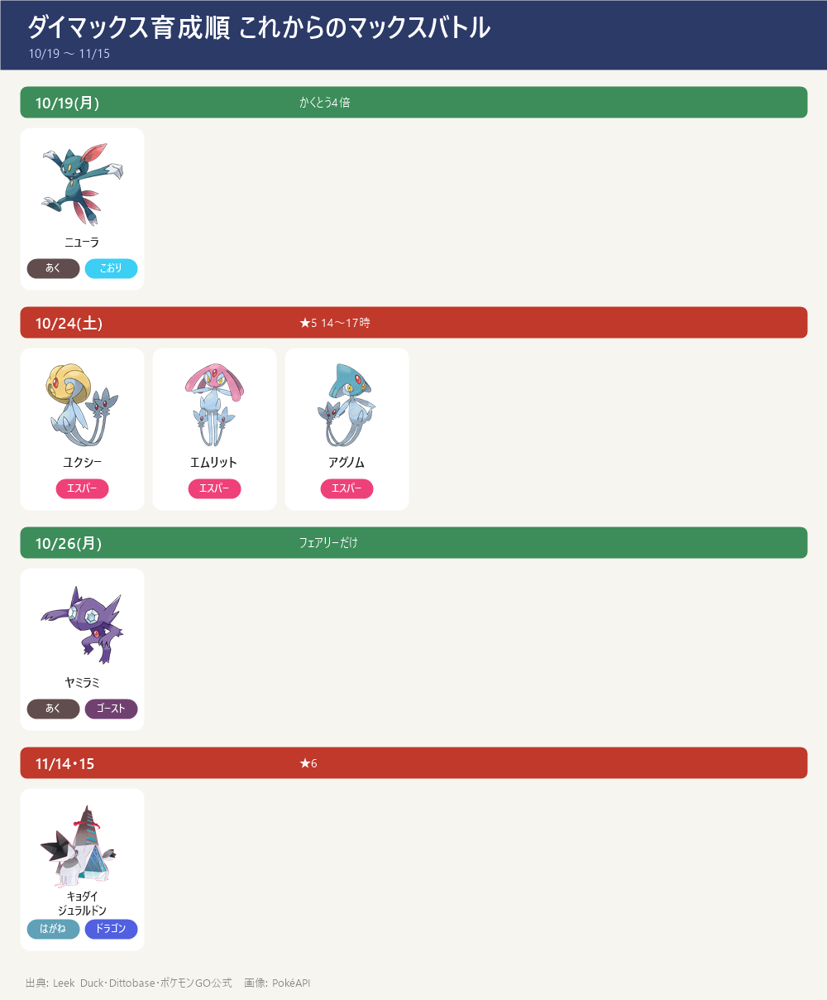

- 結論：すなより「マックス技のレベル」。マックス技 Lv1→Lv3 で威力 +40%（250→350）、PL30→40 は攻撃 +8% だけ → すな（50万未満）はほぼ使わず、MP とアメで育てる
- 強化は 11/9(日) 以降にまとめる（10/20 決定）：GOパス デラックス「ワイルドウィーク」のランク2で、マックス技の MP が 3/4（Lv2 は 600 → 450）。2〜3位・5〜6位で約2,800 → 約2,100（約700 浮く ＝ パック約1個分）。ゲンガーは 10/24 用に、ハピナスは回復役として Lv2 済み（10/21）
- 11/9 にいちばん先：②メタグロス ダイウォールを覚えて Lv2 ③ドサイドン ダイアース Lv2 → ⑤サーナイト ⑥ドリュウズ。11/9〜13 の ★5 の前に
- 止まりやすいのは MP ではなくアメ：1〜6位を全部 Lv2 にしても MP は約4,000（ふつうの日5日分）。アメが足りない技は飛ばして次へ。Lv3 はアメXL 40〜55個 → 当面は全部 Lv2 まで
- 11/16 以降のマックスバトルは未発表（10/17 時点）。発表されたらこのページを直す
育成の優先順位

- 1位 ハピナス（CP2677）：ダイリカバリー Lv2 済み（10/21）。6ボスすべてで回復役。回復量 31 → 47（4体全員に）。次はダイウォール Lv2
- 2位 メタグロス（CP3369）：ダイウォールを覚える（400MP・アメ70）→ Lv2（600MP・アメ120）。6ボスすべてで受け役（盾 20 → 40）。どの攻略サイトでも受け役の上位
- 3位 ドサイドン（CP3005）：どろかけ 替え済み（10/18）→ ダイアース Lv2（600MP）。ディアルガ・レジスチル・★6 キョダイジュラルドンで弱点
- 4位 ゲンガー（CP2160）：ダイホロウ（ダイアタック）Lv2 済み（10/21）。10/24 ユクシー・エムリット・アグノム、11/13 ラティアス・ラティオスで弱点
- 5位 サーナイト（CP2023）：あまえる 替え済み（10/18）→ ダイフェアリー Lv2（600MP）。パルキア・レジドラゴ・10/26 ヤミラミ（弱点はフェアリーだけ）
- 6位 ドリュウズ（CP1835・15-15-10・PL20）：どろかけ／ドリルライナー、ダイアース Lv1 済み → Lv2（600MP）。アメ 187 → Lv2（約110）と PL30（約40）で約150、ぎりぎり足りる。順番：Lv2 → PL30 → 和田堀の巣でアメXLを集めて Lv3（Lv3 はアメXL 約45、今20）。集まらなければ最後に ふしぎなアメXL。ディアルガの技（ドラゴン・はがね・でんき）を全部半減以下で受けられる2体目のじめん役 → 11/9〜13 に
- 後回し：エースバーン（キョダイ Lv2 済み。Lv3 はアメXL 45個）／カイリキー（CP1698 で弱い。じめん・かくとう役はドサイドンが先）／インテレオン・フシギバナ（ダイマックス版はどのサイトでも下位）／シャワーズ（パルキアの受けの控え）／ハピナス2体目（余裕ができたら2体目の回復役に）／ニューラ（CP1139・こおりのつぶて。10/19 捕獲。マニューラへの進化はアメ100 → 今76、あと24。いしはある。進化すると CP約1,680、ダイアイスがレジドラゴ・ラティアス・ラティオスに2倍。アメは技より進化を先に）
これからのマックスバトルと使うポケモン

- 10/19(月) マックスマンデー：ダイマックス ニューラ（あく・こおり）→ かくとうが4倍：カイリキー。ほのお（エースバーン）・むし（メタグロスのれんぞくぎり）も弱点
- 10/24(土) 14:00〜17:00 マックスバトルデイ：ユクシー・エムリット・アグノム（エスパー・★5）→ ゴースト（ゲンガー）・むし（メタグロス）。★5 なので4人で
- 10/26(月) マックスマンデー：ヤミラミ（あく・ゴースト）→ 弱点はフェアリーだけ：サーナイト（あまえる）
- 11/9〜13 ワイルドウィーク（★5 レジスチル・レジドラゴ・ラティアス・ラティオス）→ 11/14 ディアルガ・11/15 パルキア。くわしくはボス別のページ
- 11/14・15 ★6 キョダイジュラルドン（はがね・ドラゴン）→ じめん・かくとうが弱点：ドサイドン（どろかけ）
- 11/16 以降は未発表。去年の年末は 12/14 にキョダイカビゴンのマックスバトルデイ
MP の計画
- 1日に集められるのは 800（5:00 に戻る）、持てる上限は 1,500。パック・リサーチ・コードの MP は1日の上限に数えない
- 育成に要る MP：ゲンガー・ハピナス 各600 は済み（10/21）。残り4体 約2,800 → 11/9 以降の 3/4 なら 約2,100
- 11/8 までは MP をためる：持てるのは 1,500 まで → あふれる分はパックを開けずにとっておく（ウェブストア 6個 1,120円 ＝ 4,800MP など）。11/9 に 1,500 から強化 → 減ったらパックを開けて続きを強化
- パック（800MP）は 11/14・15 用にとっておくのがいちばん効く：1個 ＝ もう1戦。持てるのは12個まで。開けられるのは 1,500 未満のときだけ（1戦して減ったら開ける。開けると 1,500 を超えてもよい）
- 例：週3個 × 4週（10/18〜11/13）＝ 最大12個。半分の6個をとっておけば、11/14・15 が 3戦ずつ増える
- 11/12・13 は使わずに 1,500 までためる（いままでの計画どおり）
- GOパス デラックス：ワイルドウィーク（11/9 10:00〜11/15 18:00、14.99ドル）。まだ買っていない。ランク2 までに要るポイントと、特典がいつ効くかは 11/9 に画面で確認。11/9〜13 はポイントに1日の上限あり
必要な量とすなの使い方
- 覚える（Lv1）：400MP ＋ アメ50〜70（伝説80）／Lv1→2：600MP ＋ アメ100〜120（伝説130）／Lv2→3：800MP ＋ アメXL 40〜50（伝説55）
- アメの量はポケモンごとに違う（ゴース・ワンリキーは 60/110/45、ダンバルは 70/120/50）。画面で確認してから
- 効果：ダイ攻撃 250/300/350、キョダイ技 350/400/450、ダイウォール 盾 20/40/60、ダイリカバリー 最大HPの 8/12/16%。Lv4 は買えない（ムゲンダイナの特別な効果中だけ）
- すな：PL30→40 で15万、PL40→50 で25万（アメXL 296個）→ 50万未満なら上げられるのは1体だけ
- すなを使うなら まずドリュウズを PL30 へ（約7.5万すな・アメ約40 → CP1835 → 約2,750、攻撃 約+22% でドサイドンと同じくらい）。いちばん安く強くなる。PL40（CP約3,200）はさらに15万すな → 後回し。次がドサイドン（今は PL31 前後と推定 → PL40 で約13万すな、攻撃 約+11%）。カイリキー（CP1698）にすなを入れるのはやめる（じめん・かくとう役はドサイドンで足りる）。ハピナス（CP2677）はもう PL40 近いので不要
- 10/22(木) 18:00〜19:00 ネマシュのスポットライトアワー（すな2倍）でためる
出典: マックス技の量: ポケらく post94863・Sportskeeda ／ MP: Dittobase ／ 予定: Leek Duck・Dittobase・ポケモンGO公式 into-the-wild-2026 ／ ランク: GO Hub（攻撃・受け・回復）・Dittobase・ドクターポケゴーゴー ／ すな: GO Hub ／ ボス別の計算: calc.json・ww_calc.json ／ 手持ち: my_dmax.json
画像: PokéAPI ／ 更新 2026-10-21